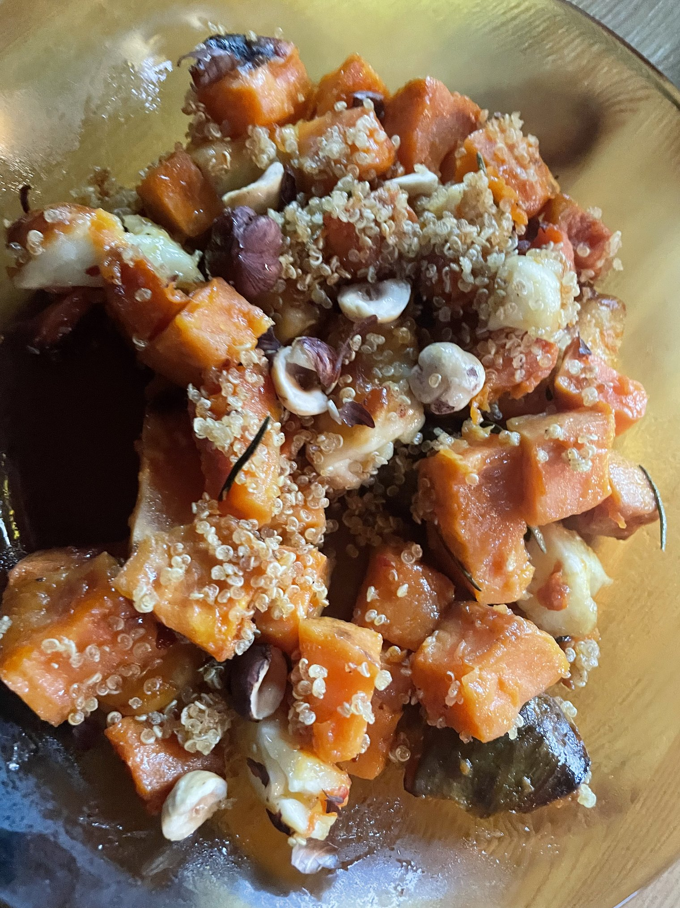

Boniato y calabaza al horno con halloumi, quinoa crujiente y avellanas
Ingredientes
2×
- 1 boniato
- 0.25 de calabaza
- aceite de oliva
- sal
- romero
- 4 cdas de quinoa cocida
- 100 g de halloumi
- 1 cda de miel
- 1 pizca de chile
- 1 puñado de avellanas

Preparación
Paso 1
Cortar en dados 1 boniato y 0.25 de calabaza, aliñar con aceite de oliva, sal y romero y hornear 30min a 200ºC.
Paso 2
Tostar en una sartén 4 cdas de quinoa cocida con un poco de aceite hasta que esté crujiente. Dorar 100 g de halloumi en dados.
Paso 3
Mezclar 1 cda de miel con 1 pizca de chile.
Paso 4
Servir las verduras con el halloumi, la quinoa crujiente y 1 puñado de avellanas, y regar con la miel picante.